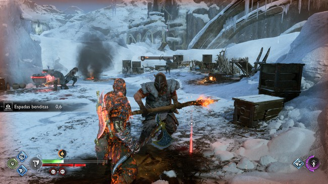
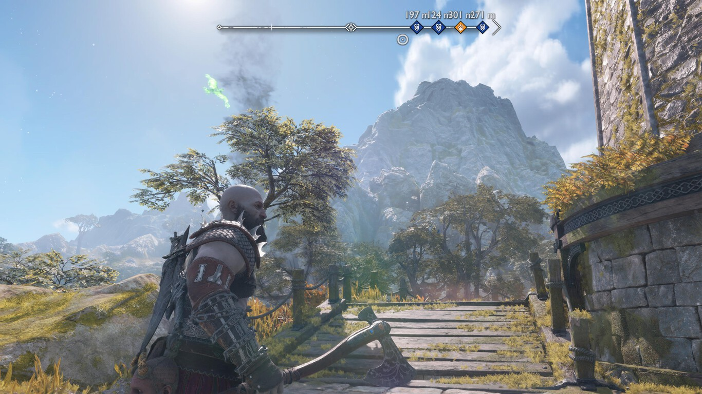
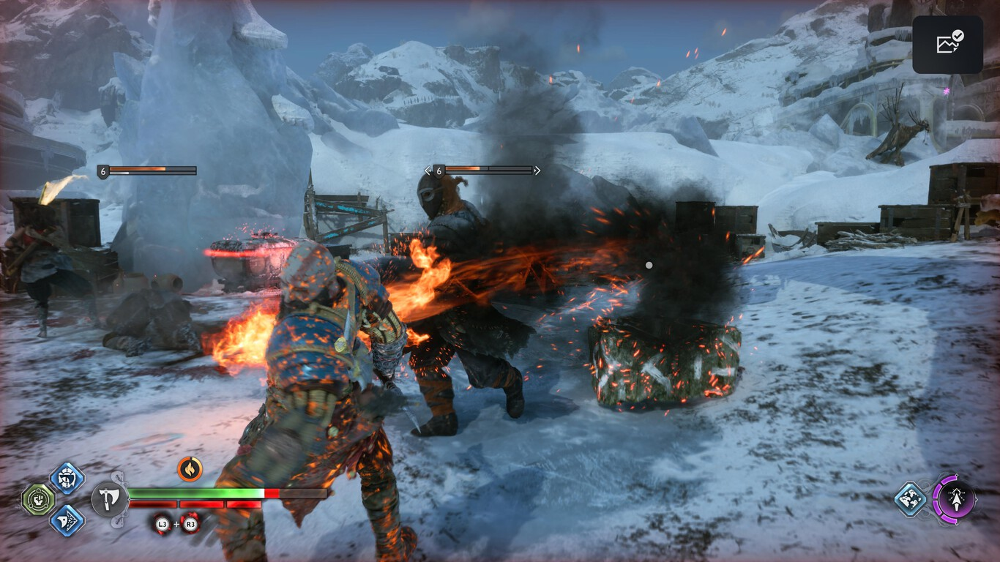
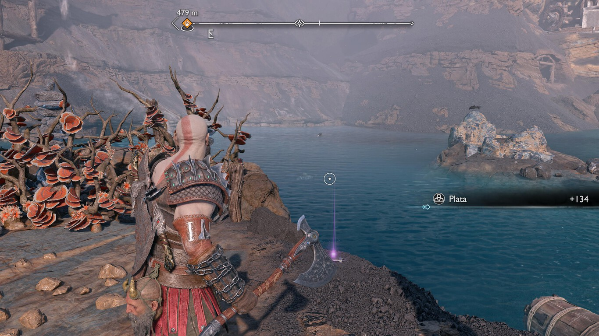
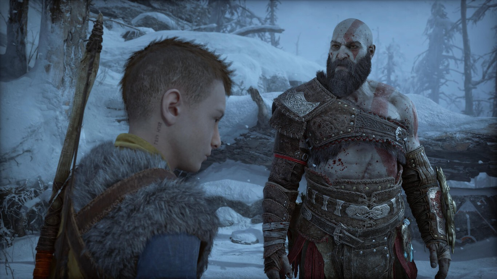
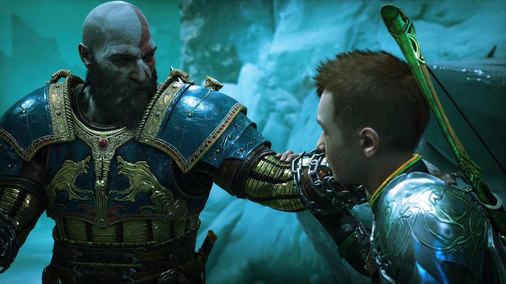

7 trucos para los combates
1.Los cristales
Este truco se puede empezar a usar desde el principio del juego. Resuelta que cuando pisas los cristales, ya sean de ira o de vida, se emite una pequeña onda que aturde a los enemigos durante unos segundos. Esta ventaja la podemos usar a nuestro favor, ya que es capaz incluso de cortar ataques imparables de color rojo.
2.Los círculos de colores
Cuando los enemigos se abalancen contra nosotros, veremos que emitirán círculos de colores. Es muy importante conocer que:
- Los círculos amarillos son ataques que se pueden contraatacar con el escudo.
- Los círculos rojos son ataques que sólo se pueden esquivar.
- Los círculos azules requieren que peguemos dos veces con el escudo para parar ese ataque o romper la guardia enemiga.
Estos tres conceptos son básicos y familiarizarnos con ellos nos ayudará a superar los combates de forma más sencilla. Si simplemente nos centramos en pegar, seguramente nos cueste muchísimo más obtener la victoria.
3.Haz uso del entorno
La mayoría de escenarios cuentan con objetos que podemos usar a nuestro favor para mermar al enemigo. Ya sean pilares de piedra, rocas o plantas venenosas, utilizar estos objetos quita bastante de vida a un enemigo
4.Cambia de arma
Kratos tiene varias armas con las que enfrentarse a sus adversarios, pero puede cambiar en el mismo combate el tipo para generar sinergias entre ellas. De hecho, hay combos de daño aumentado cuando un enemigo está congelado o quemado y le infligimos el otro elemento. Es muy importante consultar el bestiario y ver a qué es vulnerable cada enemigo, ya que seguramente los encontremos con regularidad.
5.Los precipicios
Parece una tontería, pero es muy útil. Si peleamos cerca de un precipicio o acantilado, nosotros no nos vamos a caer, pero si terminamos el combo con nuestra arma, es más que posible que los enemigos salgan volando y podemos librarnos de los más molestos rápidamente.
6.No te olvides de ellos
Los aliados en este caso son fundamentales, por ejemplo, las flechas de Atreus inflingen estados que hace que nuestros golpes quiten mucha más vida. Si nos limitamos simplemente a dejar que hagan cosas por su cuenta, estaremos perdiendo una ayuda muy útil. También es importante saber que la mayoría de aliados son lo más útil contra enemigos que están lejos, en un saliente o son voladores. ¡No te olvides de ellos!
7.Kratos está furioso
Que Kratos esté enfadado no es nada nuevo, pero la ira sí que ha sufrido modificaciones, ya que, lejos de hacer spoiler, encontraremos que hay de diferentes tipos con funcionalidades distintas. Lo bueno es que podemos cambiar siempre que queramos desde el menú adaptándola a la necesidades de cada enfrentamiento.
